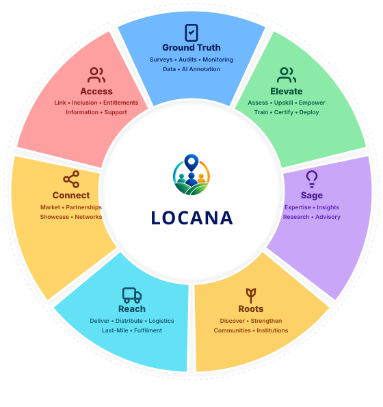
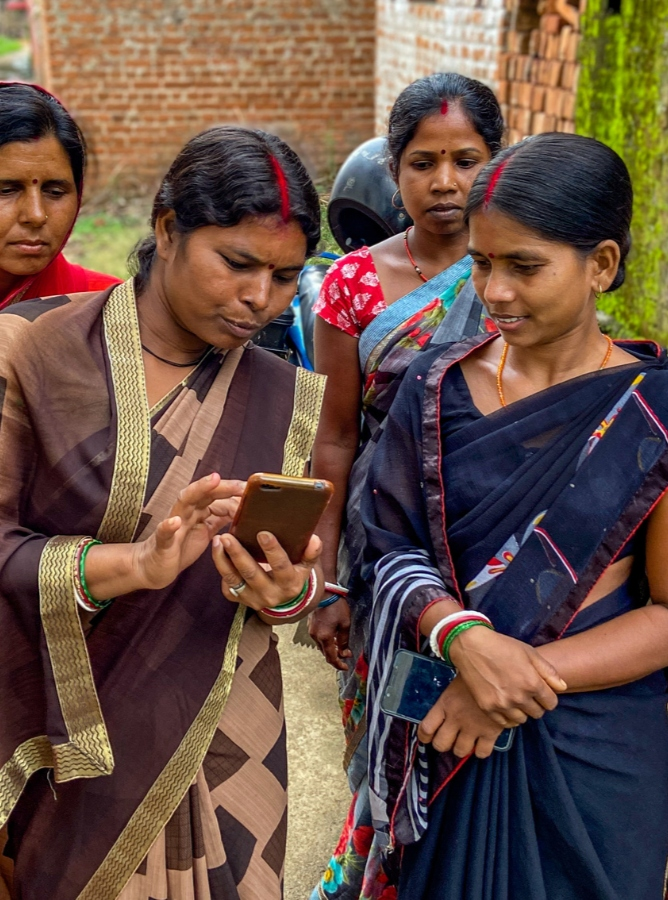

From every village to every opportunity. Locana connects institutions, businesses and communities through trusted local people, technology and last-mile capabilities.

A connected platform for a more inclusive and informed India.
One local network. Multiple ways to deliver.

People • Communities
Markets
Ground Truth • Evidence
Intelligence
Verification • Last-Mile
Operations • Implementation
Support
Skills • Livelihoods
Local Enterprise
An integrated ecosystem designed to solve last-mile delivery, data intelligence, and community inclusion at national scale.
Reliable primary intelligence from the ground.
Transforming last-mile presence into measurable, positive change for citizens, institutions, and local economies.
Connecting people to information, services, schemes, markets and opportunities.

Giving institutions reliable ground intelligence for evidence-based decisions.
Creating local capability, work opportunities and stronger community ecosystems.
When the last mile becomes reachable, possibilities become real.
Locana is a distributed local network that connects organisations to trusted people, ground-level knowledge and last-mile capabilities — helping them reach places, understand realities and get things done.
When organisations need to reach the ground, Locana provides the local people, connections and capabilities to make it happen.
Bridging institutions and decision-makers with grassroots communities through trusted local partners and technology.
Trusted Local Network + Technology + Coordination. We match the requirement, geography, skills and local context with the right local partners and operating capabilities.
The fundamental operating unit of the network — combining local people, skills, technology, assets and trust.
Local professionals with geographic and community familiarity.
Domain, fieldwork, digital and service-specific capabilities.
Mobile tools, communication, workflow, verification and reporting.
Local access, mobility, devices, relationships and practical resources.
Community familiarity, ethical engagement and accountable execution.
Built from the ground up on verifiable quality, community respect, and transparent governance.
Standardised workflows, location/time controls and appropriate quality checks.
Consent-led community engagement, dignity, safeguarding and fair field practices.
Digital tools for coordination, data capture, verification and reporting.
Trained local partners, supervisor oversight and documented quality processes.
Privacy-conscious handling of field data, access controls and appropriate governance.
Proven operational depth and verified field reach across India.
Whether you need trusted local presence for research, verification, implementation, access, logistics or community engagement, Locana helps you reach the ground with confidence.
Tell us your geography, requirement, scale and timeline. Our team will map the right local capability.
Become part of the Locana local-partner network and access training, projects and opportunities.
Share your requirements and our team will map local capability and get back to you promptly.